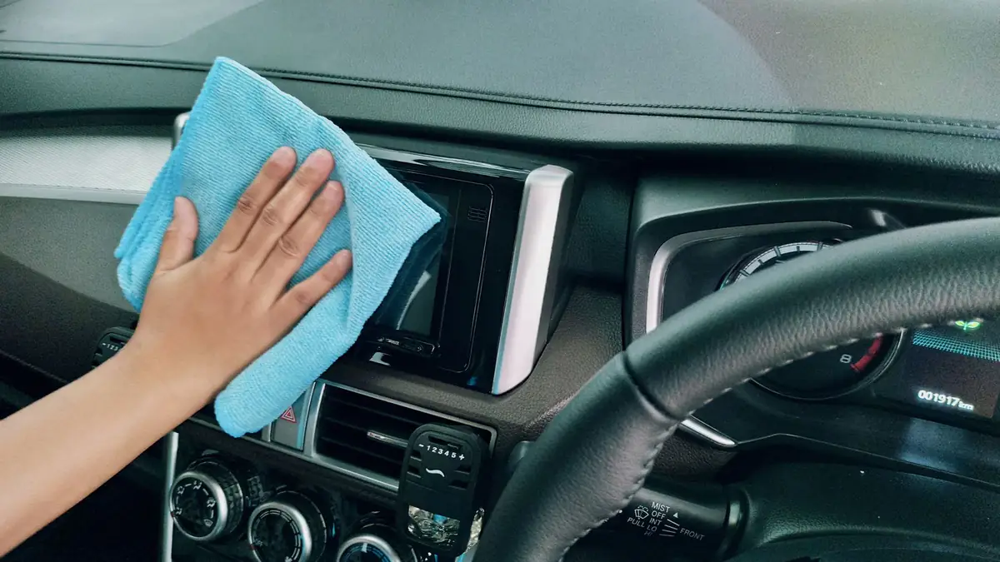

Ozono para coche en Sevilla: desinfección y fuera malos olores
El ozono para coche cuesta 25 € en Brío Car Wash (Sevilla). Desinfecta el interior y elimina los malos olores persistentes: tabaco, comida, mascotas y humedad. Se pide solo o añadido a cualquier lavado, con cita previa por WhatsApp o llamada.
Qué se va con el ozono
- 01Olor a tabaco
- 02Olor a comida
- 03Olor a mascotas
- 04Humedad
- 05Bacterias y virus
Un interior más limpio, fresco y saludable.
Cuándo pedirlo
Cuando te compras un coche de segunda mano. Después de llevar mascotas. Cuando el coche huele a humedad. Cuando alguien ha fumado dentro.
La aplicación se hace en el local. Cuánto dura y el tiempo de ventilación antes de volver a usarlo te lo confirmo al pedir cita, según el coche.

Imagen de ejemplo25 euros
¿Cuánto cuesta el ozono para el coche?
25 €, solo o añadido a cualquier lavado.
| Opción | Qué es | Precio |
|---|---|---|
| Ozono suelto | Solo la aplicación de ozono. | 25 € |
| Ozono + lavado | Añadido a BRÍO basic, premium o deluxe. | +25 € |
Si se aplica antes o después del lavado te lo digo al pedir cita.
Lo que me preguntan del ozono
¿Cuánto cuesta el ozono para el coche?
25 €, solo o añadido a cualquier lavado.
¿El ozono elimina el olor a tabaco, mascotas o humedad?
Sí. La aplicación de ozono está pensada para olores persistentes: tabaco, comida, mascotas y humedad.
¿Es seguro? ¿Cuándo puedo usar el coche tras el ozono?
Se aplica en el local, con el coche en mis manos. El tiempo de ventilación antes de volver a usarlo te lo confirmo al pedir cita, según el coche.
¿Cada cuánto se recomienda hacerlo?
Depende del origen del olor. Si vuelve tras un tiempo, se puede repetir; te aconsejo en la cita según tu caso.
¿Elimina bacterias y virus?
Sí. El ozono desinfecta el interior y elimina bacterias y virus, además de los malos olores.